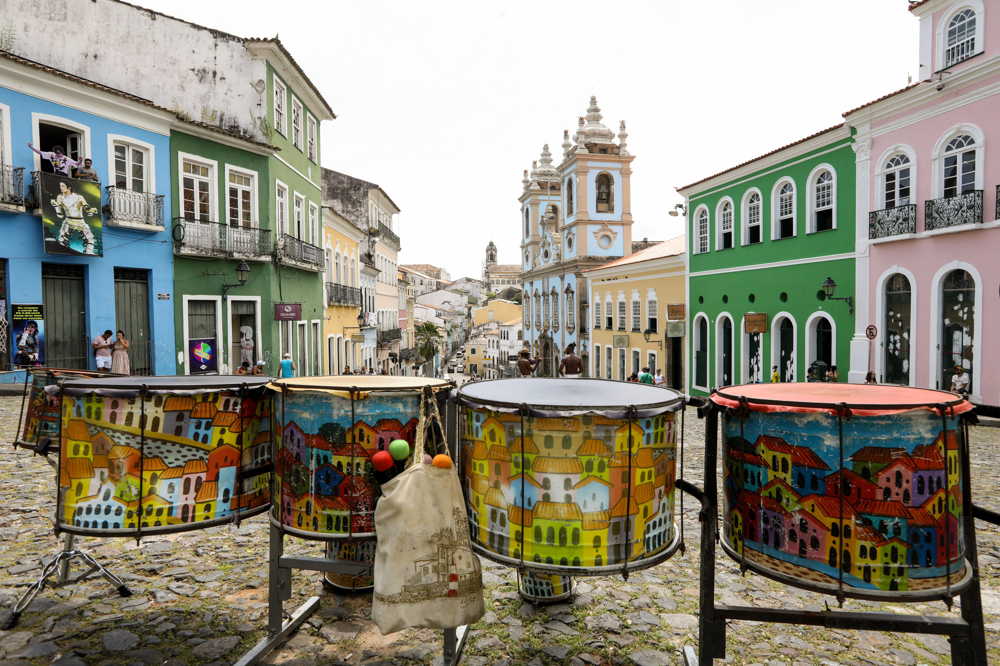

Rio de Janeiro
O Rio reúne belas paisagens, do topo do Cristo Redentor, passando pelo Vidigal e chegando até lugares mais escondidinhos.

Foz do Iguaçu
Dona de uma das Cataratas mais famosas do mundo, Foz se divide entre Brasil, Argentina e Paraguai, sendo que o nosso país foi privilegiado com o melhor trecho..

São Paulo
São Paulo não para nunca e este é um dos motivos que fazem os viajantes adorá-la.

Salvador
Quem é que não quer um pouco do clima baiano? Os brasileiros adoram e os gringos ainda se apaixonam por Salvador.